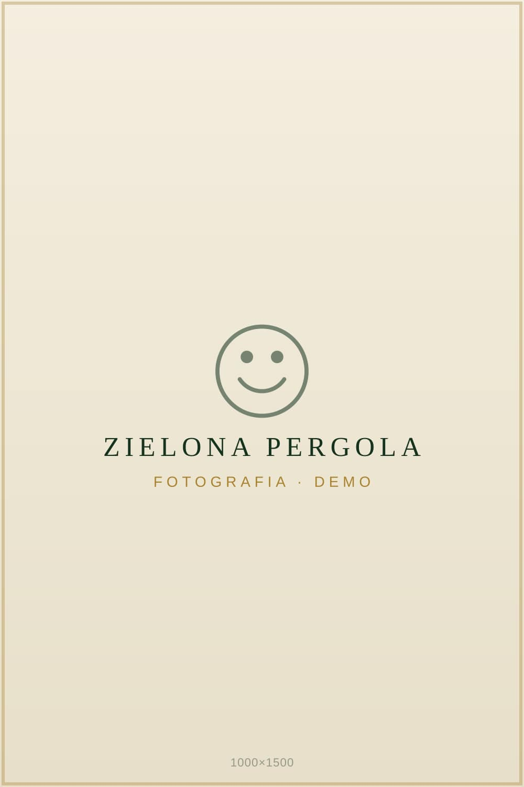
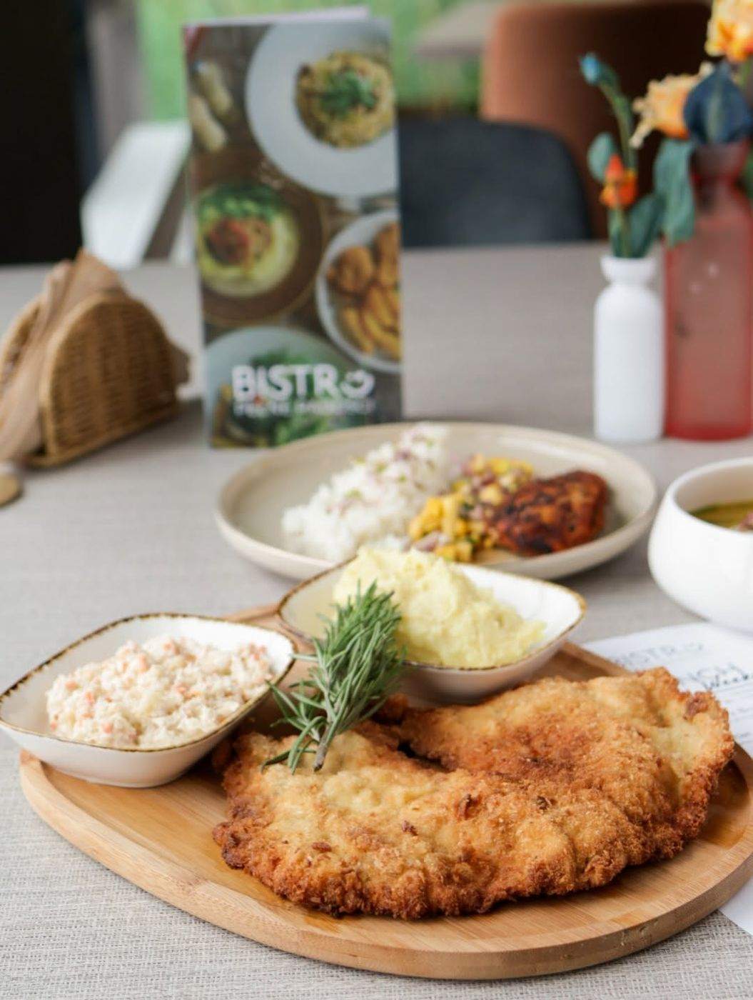
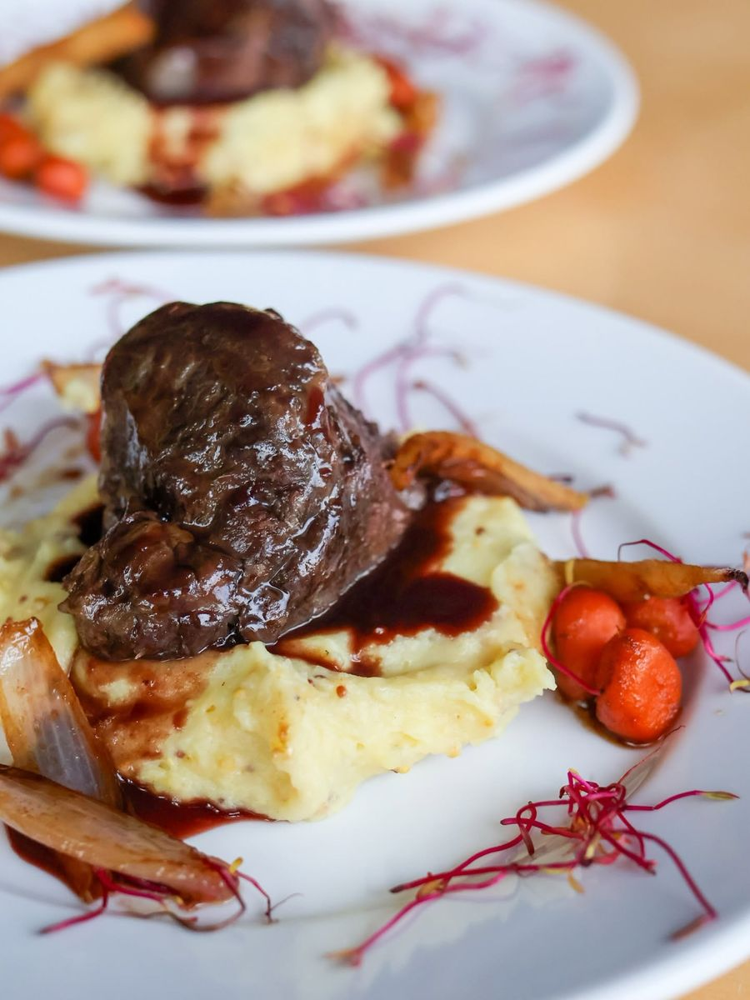
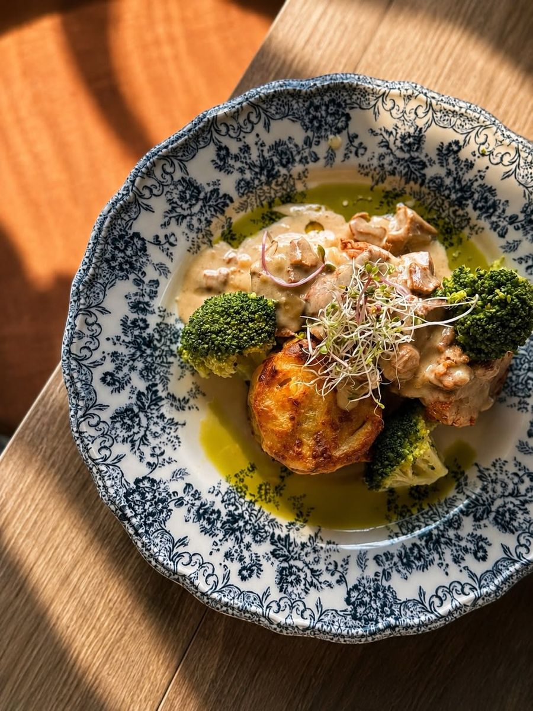
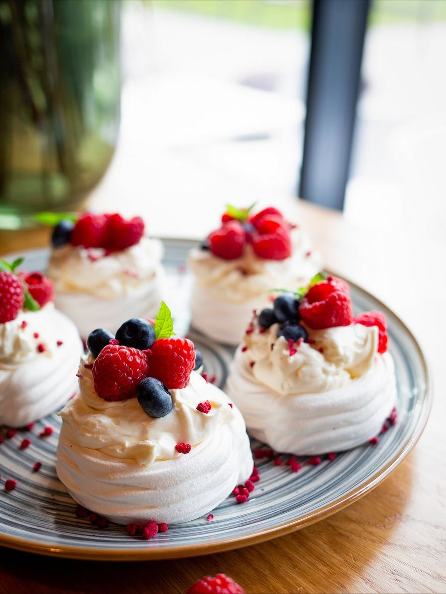
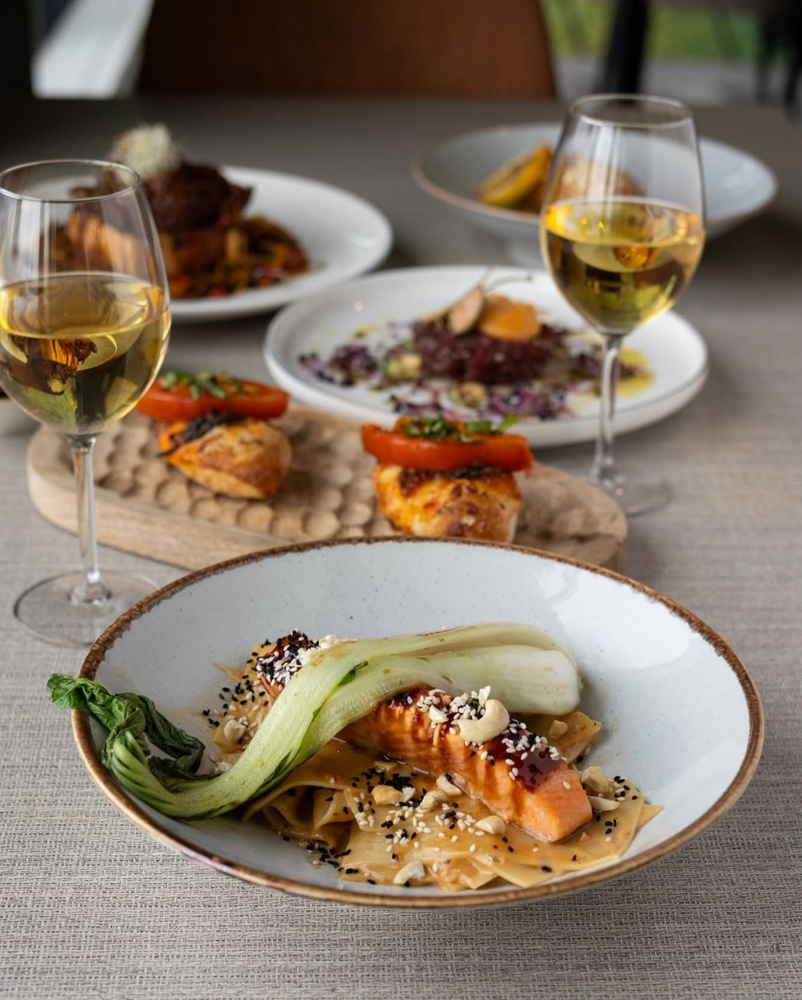

Bistro — Jasionka
Na co dzień — pełne smaku, światła i zieleni.
Jasne, zielone wnętrze, w którym codzienny lunch smakuje jak mała uroczystość. Na miejscu i na wynos.
O Bistro
Miejsce, w którym dzień zwalnia.
Bistro Pełne Radości to świetliste wnętrze pełne kwiatów, zieleni i dziennego światła. Gotujemy kuchnię polską i europejską — prosto, sezonowo i z wyczuciem, ze świeżych składników.
Przyjdź na spokojny lunch, spotkanie przy stole albo szybkie danie na wynos — jak wolisz.

Codziennie w Radości
Prosto, świeżo, bez pośpiechu.
Codziennie: lunch, pizza i burgery — na miejscu i na wynos.
- Lunch — sezonowe dania kuchni polskiej i europejskiej, przygotowywane na miejscu.
- Pizza — prosto z pieca; więcej na stronie Pizzy
- Burgery — konkretne i świeże, także na wynos.
- Na wynos — wszystko, co u nas zjesz, zabierzesz też ze sobą.
Lunch dnia
Codziennie coś dobrego.
Karta lunchowa zmienia się każdego dnia — zawsze świeżo, zawsze domowo. Tak to u nas wygląda:






Wnętrze i atmosfera
Zielona oranżeria.
Dużo dziennego światła, naturalna zieleń, kwiaty na stołach i miękkie, ciepłe wieczorne lampy. Wnętrze zaprojektowane tak, żeby chciało się zostać dłużej — na rozmowę, kawę po lunchu albo wieczór przy wspólnym stole.


Dla kogo
Przy naszych stołach każdy ma miejsce.
Na lunch
Szybko, świeżo i spokojnie — w przerwie dnia, samemu albo z zespołem.
Rodzinnie
Wspólny stół na weekendowe obiady i małe rodzinne okazje.
Na spotkanie
Kawa, rozmowa przy jedzeniu, spotkanie biznesowe w zielonym otoczeniu.
Lokalizacja i kontakt
Znajdziesz nas w Jasionce.
Bistro Pełne Radości
Jasionka 954c, 36-002 Jasionka
Bistro: 723 800 801
Manager: 601 940 856
E-mail: patrycja@restauracjaradosc.pl